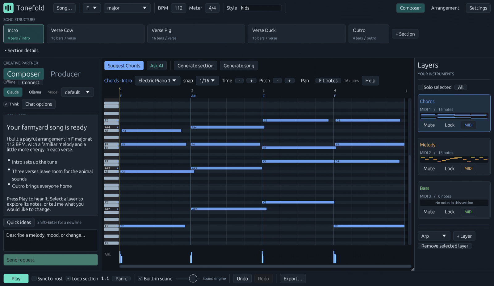

Eleven layer kinds, all editable
Chords, melody, bass and drums, plus pads, arpeggios, plucks, counter-melody, harmony, sub and percussion. Each one is plain notes in a piano roll with a velocity lane and drum lanes.
Open-source AI music composer
Tell Claude what you want to hear. Tonefold writes chords, melody, bass and drums into a piano roll, plays them straight away, and lets you change any note. Export MIDI, a stereo mix or one WAV per layer.
Tonefold is a desktop app, so there is nothing to install on this device. Watch the demo below, or copy the release link for later.
v1.4.0Free, GPL-3.0macOS 11+ universalWindows 10/11

Demo, 5:38
The best way to see what it does: a screen recording of the composer at work, 5 minutes 38 seconds.
Recorded before Tonefold was renamed from FLVSTX, so the app in the video is called FLVSTX and runs inside FL Studio as a plugin. Tonefold now also runs as a standalone app. Loads from YouTube only when you press play.
What it does
Every part lives on its own layer and section, so you can ask for a new bass line, lock the chords you like and keep going. Whatever exists shapes what gets written next.
Chords, melody, bass and drums, plus pads, arpeggios, plucks, counter-melody, harmony, sub and percussion. Each one is plain notes in a piano roll with a velocity lane and drum lanes.
A built-in General MIDI synth (GeneralUser GS) plays the song before you pick a single instrument. Export MIDI, a stereo WAV mix and per-layer stems.
Repeats are new performances, not copies. Each style has its own groove, sustained parts swell, the sustain pedal is used, and 808 bass glides.
In Producer mode you see the plan, with the key, tempo, form and the exact layer@section each step touches, and nothing is written until you approve. How that works.
Generation, playback, editing and export run on your machine. Only the chat uses a model: your own Claude login through Claude Code, or an Ollama model on this PC or your network.
An optional CLAP/VST3 plugin runs the same composer inside a DAW (FL Studio is the tested host). A CLI and a skill file let Claude Code or Codex compose too.
Producer mode
A producer agent reads the session and proposes the work. You approve it. Then four specialists each write only their own layers. The approval is enforced by the app, not by a prompt.
Example shape of a plan. Every step names exactly the layers and sections it will touch.
The host refuses writes until you say yes.
The producer trusts the host's ledger of what actually landed, not the specialists' own account of it. Composer mode is still there for quick one-off changes.
Architecture
The app and its sound engine are native Rust. The composer is a small Node.js sidecar built on the Claude Agent SDK, talking to the app over a WebSocket on your own machine.
Runs the composer, producer and the four specialists, with tools that read and write the session.
Your own login through Claude Code.
A model on this PC or across the room.
Produced on your machine, offline.
The same composer inside your DAW. FL Studio is the tested host.
Let Claude Code or Codex compose through tonefold-cli.
Install
One download per platform. No account, no installer wizard. Add the DAW plugins only if you want them.
Open the .dmg. One universal build covers Apple Silicon and Intel, macOS 11 or later.
The app is not notarized yet, so macOS asks before it runs. On macOS 15 and later, go to System Settings, Privacy & Security, and click Open Anyway. On older versions, right-click the app, choose Open, then Open again.
Copy Tonefold.clap and Tonefold.vst3 from the dmg's "DAW plugins" folder.
~/Library/Audio/Plug-Ins/CLAP
~/Library/Audio/Plug-Ins/VST3Anywhere you like. Windows 10 or 11.
It installs under %LOCALAPPDATA%\Tonefold with no administrator prompt, and adds a Start Menu entry.
powershell -ExecutionPolicy Bypass -File scripts\install.ps1Add -Plugins to install the CLAP and VST3 too. This asks for administrator rights once.
powershell -ExecutionPolicy Bypass -File scripts\install.ps1 -PluginsFor the chat composer: Node.js 20 or later and Claude Code signed in, or an Ollama server. Generation, playback, editing and export work without either.
Open source
Tonefold is GPL-3.0 and developed in the open. The licence covers the code, not the music you make with it. Bug reports, ideas and pull requests are welcome.
FAQ
No. Tonefold is a standalone app with its own piano roll, synth and export. The CLAP/VST3 plugin is optional, for when you want the composer inside a DAW.
The app is free. The chat composer uses your own Claude plan through Claude Code, and the app shows the cost of each turn. If you run it on an Ollama model instead, that is free too.
Generation, playback, editing and export all run on your machine. Only the chat composer needs a model, and that can be a local or LAN Ollama server, so nothing has to leave your network.
Yes. There is one universal download for Apple Silicon and Intel, on macOS 11 or later. An Audio Unit build is on the roadmap. Today the optional plugins are CLAP and VST3.
You do. The GPL covers Tonefold's code, not the songs you make with it. The built-in sounds are GeneralUser GS by S. Christian Collins.
The build is not notarized by Apple yet. Use Open Anyway in System Settings, or right-click and Open on older macOS. The install steps above cover it.